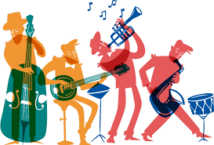
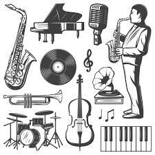

El jazz
David Tovar 625

La Historia del Jazz
El Jazz tuvo sus inicios hacia finales del siglo XIX, en la ciudad de Nueva Orleans, donde habitaban esclavos de África, del Caribe, del sur del país y criollos libres o mestizos, y fue precisamente esa mezcla de culturas musicales lo que originó una nueva forma de arte que terminó por definirlos a todos.
Generos del Jazz
Jazz blues, Jazz fusión, Jazz modal, Jazz rap y Jazz tradicional.
Interpretes mas importantes
De acuerdo con Edmeé García, escritora, traductora y locutora en Horizonte 107.9 F.M., los cinco grandes inmortales del jazz son Charlie Parker (1920-1955), Miles Davis (1926-1991), Thelonious Monk (1917-1982), John Coltrane (1926-1967) y Charles Mingus (1922-1979).
-

- 
- 